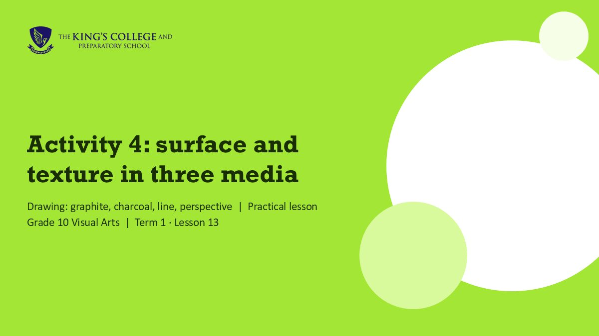

Term 1 · Lesson 13 · Practical lesson
Activity 4: surface and texture in three media
Start here
Today I will
- Record four different surfaces closely
- Choose marks that match each texture
- Combine fineliner with a watercolour wash
Close your eyes and touch the desk, your sleeve and your hair. How could a pencil make someone 'feel' those differences with their eyes?
Words to Know
| Word | Meaning |
|---|---|
| Texture | How a surface feels, or looks as if it would feel: rough, smooth, soft or hard. |
| Implied texture | Texture that is drawn or painted to look real on a flat surface. |
| Stippling | Building tone and texture with many small dots. |
| Wash | A thin, even layer of watered-down paint. |
| Wet-on-dry | Painting onto dry paper so that edges stay crisp. |
Slides

Notes
Recording surfaces (bark, metal, cloth, glass) in four 6 cm squares: two in graphite, one in fineliner (hatching, stippling, line) and one in fineliner over a watercolour wash; annotating the choices.
Marks that match a surface
- Bark and wood: Long, broken lines that follow the grain, with dark gaps.
- Rusted metal: Stippling and scumbling, with sharp, bright scratches.
- Folded cloth: Smooth gradations that turn softly from light into shadow.
- Glass: Hard-edged highlights and reflections; the background shows through.
- Woven grass: Repeated small shapes, each with its own light and dark side.
Fineliner and watercolour
- Plan the whites: Decide where the paper must stay white for highlights.
- Pale wash first: Lay a light, even wash over the square and let it dry.
- Darker wash: Add a second, darker layer wet-on-dry in the shadows.
- Fineliner last: When the paint is dry, add texture with hatching, dots and line.
Let the mark match the surface.
Practical
You need: Phone (photos of surfaces only), pencils 2H to 8B, fineliners, watercolour set, round brush, two water jars, paper towel, VJ
Activity 4: surface and texture in three media
- Photograph four interesting surfaces in the agreed area (no people in the photos).
- Rule four 6 cm squares in your VJ.
- Draw the first two surfaces in graphite, matching your marks to each texture.
- Draw the third surface in fineliner only, using hatching, stippling or line.
- Lay a pale watercolour wash in the fourth square, let it dry, then add the texture in fineliner.
- Paste the photos beside the squares and annotate the techniques you chose.
Activity 3 hand-in (Friday 5 February). Activity 4 is due on Friday 12 February.
Test yourself
- What is implied texture?
- Why do you add the fineliner after the wash is dry?
- Which marks suit rusted metal?
Show answers
1. Texture that is drawn or painted to look real on a flat surface. 2. Ink on damp paper bleeds and loses its crisp line. 3. Stippling and scumbling, with sharp bright scratches.
Finished early?
Draw one object with the wrong texture on purpose.
- Draw a simple cup in your VJ.
- Give it the texture of tree bark or rusted metal.
- Use marks that match the new texture.
- Write one sentence: how does the swap change the meaning?